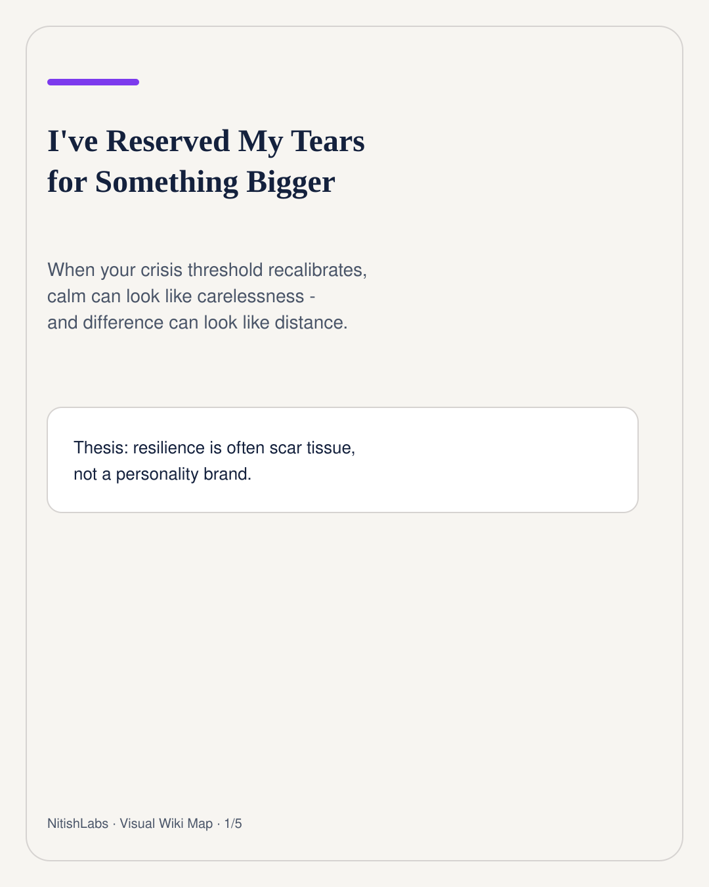
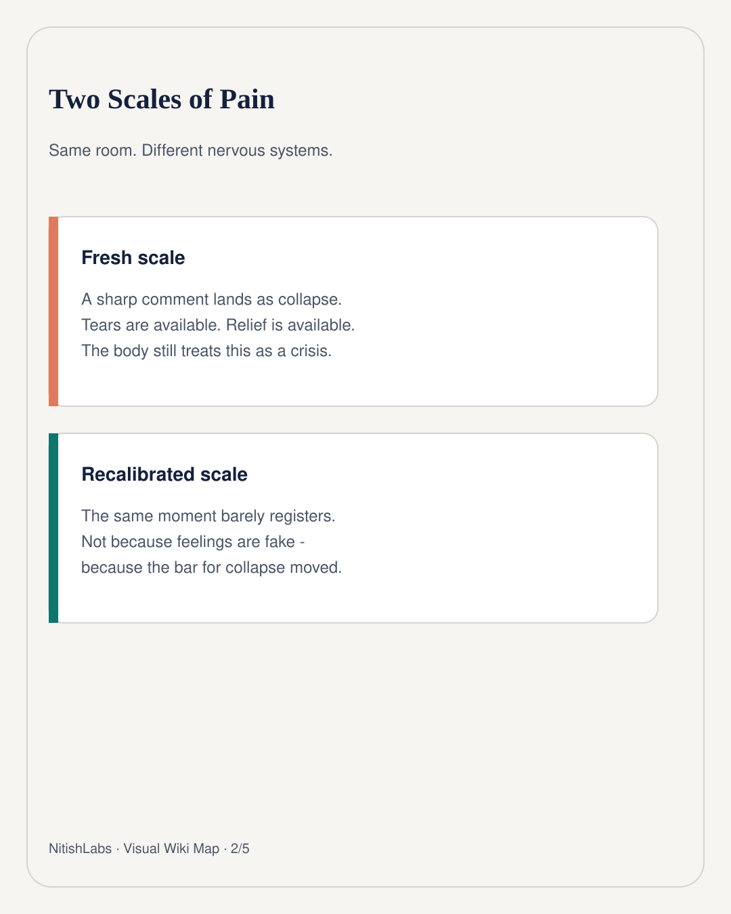
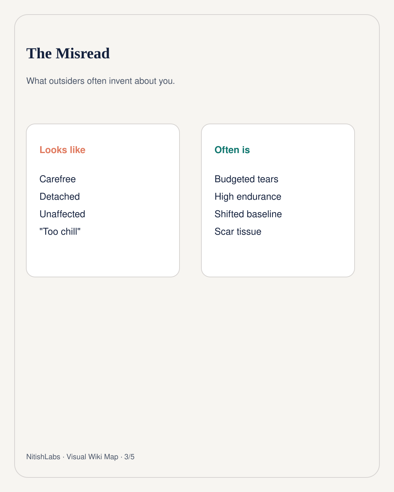
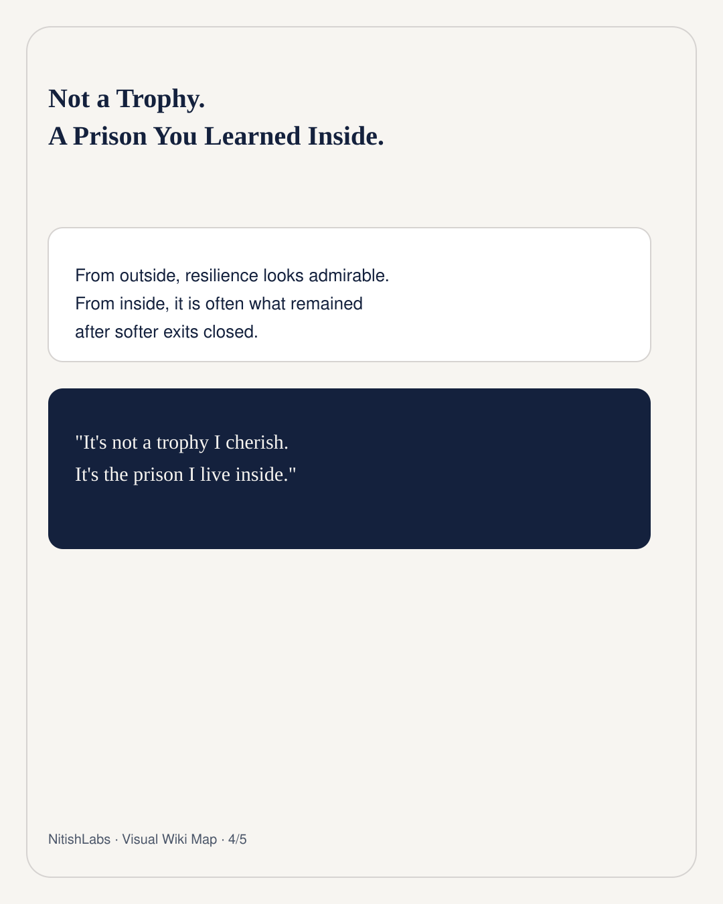
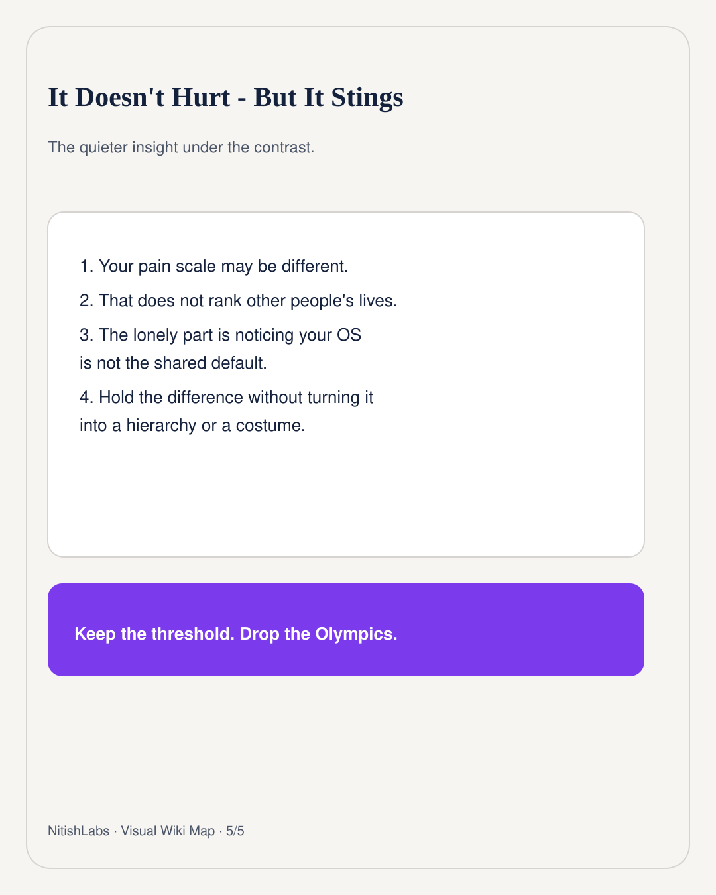

I've Reserved My Tears for Something Bigger
When your crisis threshold recalibrates, calm can look like carelessness - and difference can look like distance.
Visual Wiki Map
LinkedIn-style compressed carousel · swipe





Sometimes you watch someone break over a moment that would barely move your needle - and the shock is not judgment. It is recognition. You thought you were standing on the same floor. Then you feel the gap.
From the outside, the person who stays calm gets misread fast: carefree, detached, “too chill.” Nitish Chauhan’s read is sharper. Often that calm is not lightness. It is a budget. Tears have been reserved for something larger because smaller collapses became unaffordable somewhere along the way.
Two scales in one room
Pain thresholds are not moral rankings. They are calibrations. A nervous system that has lived through long uncertainty, rebuilds, and days that already cost everything just to function will treat “crisis” differently than one that still has soft landings available.
So when someone cries hard over a sharp comment, both things can be true: their tears are real, and your body does not classify that moment as collapse-worthy. Neither person is performing. They are running different scales.
The part that stings
The deeper hit is rarely “I am tougher.” It is: I do not interpret reality the way the people next to me do. That can feel like standing just outside the circle - not above it, not below it. Just outside. It does not always hurt. It still stings.
Resilience is admired from the outside. From the inside, it is frequently scar tissue left after having no alternative.
That is why the line matters: it is not a trophy. It is a prison you learned how to walk inside. Pride is the wrong frame. So is the suffering Olympics. Keep the honest threshold. Drop the need to rank anyone else’s life from one visible moment.
Hold the difference cleanly. You can know your scale has changed without turning other people’s tears into a verdict on their depth - and without pretending your calm means nothing cost you to earn it.